DALE CARNEGIE · HOW TO WIN FRIENDS · PART TWO · CHAPTER 6 · PDF p109–119
How to Make People Like You Instantly
Everyone you meet wants to feel that they matter. Find something about them you honestly admire, say it, and treat them as important. Do it because you mean it, not to get something.
Carnegie opens with a bored post-office clerk whose day he changed with one honest compliment about his hair, and then states what he calls the one great law of human conduct: always make the other person feel important. He traces it back through every major religion to the Golden Rule. The rest of the chapter is evidence: a volunteer who settled a turf war over a cash box, a blacksmith's son who became a famous novelist by praising a poet, a shy boy invited into an advanced class, a lonely widow who gave away her late husband's car, a judge who gave away a puppy, George Eastman giving a two-hour tour and a $90,000 order to a man warned to stay five minutes, and a restaurant owner who saved a key employee. The condition is in the principle itself: it must be sincere. This chapter closes Part Two, so the page ends with the Part's six principles in one place.
Principle 6 of Part Two
Make the other person feel important—and do it sincerely.
How the chapter fits together
pdf p109–119 · read this first
Where it sits. This is the sixth and last chapter of Part Two, "Six Ways to Make People Like You". The five before it were: become genuinely interested in other people (Ch.4), smile (Ch.5), remember names (Ch.6), be a good listener (Ch.7) and talk in terms of the other person's interests (Ch.8). This one is the root the other five grow from: each of them is a way of telling someone "you matter". It also picks up Part One's idea that the desire to feel important is the deepest human urge (Ch.2, The Big Secret) and turns it from a fact about people into a daily habit. Next comes Part Three, "How to Win People to Your Way of Thinking" (title page pdf p120), starting with "You Can't Win an Argument".
The argument as a chain. Each row reacts to the one before it.
Openingbored post-office clerk→one honest compliment→his day changes
Objection"what did you want from him?"→nothing but the joy of giving
The lawDewey · William James→every religion's Golden Rule→always make others feel important
Every dayRose and Jane's booth"sorry to trouble you"→all the time, everywhere
Why it's bigHall Caineshy Chris→everyone feels superior in some way
PrincipleDisraeli: talk about them→Principle 6, sincerely→Part Two in a nutshell
Limitshonest admiration onlyno hidden askflattery is counterfeit
About the title: "instantly" is a promise about speed. Every story here turns on a single honest sentence (about hair, a house, dogs, oak panelling) that changes the other person's mood within seconds. The friendship that follows takes longer, but the turning point is quick.
01 · THE OPENING STORY
The post-office clerk and his head of hair
pdf p109–110
Carnegie starts with the smallest possible test: a stranger, a few seconds at a counter, and nothing to gain.
New York post office33rd Street and 8th Avenuea registered letterunder a minute
The situation. Carnegie is standing in line to send a registered letter. The clerk behind the counter looks bored stiff: weigh the envelope, sell the stamps, count the change, write the receipt, the same routine for years.
The move. Carnegie sets himself a small private challenge: make this man like him. He reasons that to do it he has to say something nice, and it has to be about the clerk, not about himself. So he asks himself one question: what is there about this person I can honestly admire? He admits that question is often hard with strangers. This time it was easy: the clerk had a magnificent head of hair. While the envelope was being weighed, Carnegie said, with real enthusiasm, that he wished he had hair like that.
What happened. The clerk looked up, surprised, and broke into a smile. He said modestly that it was not as good as it used to be; Carnegie told him that even so it was still splendid. They chatted pleasantly, and the clerk's parting remark was that plenty of people had admired his hair.
Carnegie's guess about the rest of the man's day: he walked to lunch feeling light, told his family about it that evening, and checked the mirror with fresh pride.
The objection. When Carnegie told this story to an audience, a man asked him afterwards what he had been trying to get from the clerk. Carnegie was indignant. His answer, in plain words:
If we are so selfish that we cannot hand out a little happiness and honest appreciation without expecting something back, we have shrunk ourselves, and we will earn the failure that comes with it. (He compares such pinched souls to sour crab apples.)
Yes, he did want something, and he got it: the feeling of having done something for a person who could do nothing in return. That feeling, he says, stays with you and keeps giving long after the moment has passed.
"What is there about him that I can honestly admire?"Carnegie's question to himself at the counter (pdf p109)
Dated wording. Carnegie imagines the clerk telling "his wife" about it. Today: telling whoever is at home, or posting about it. The point is the same: a small, specific compliment travels further than you think.
Picture it
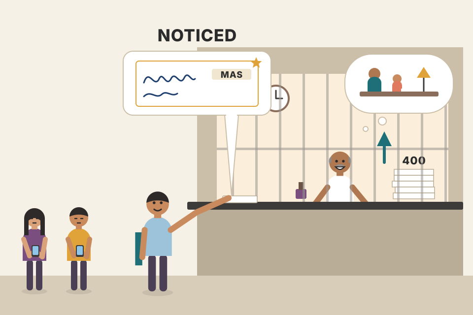
At a Chennai railway booking counter, the clerk has issued four hundred tickets since morning and nobody has looked up from their phone. You notice his handwriting on the reservation slip is beautiful, like a calligrapher's, and you say so. He stops, smiles, and for the next minute tells you his father made him practise every evening. You leave with the same ticket everyone else got; he leaves the counter for tea a little taller.
Where it breaks: the handwriting compliment works because it is true and specific. If you invent something to praise because you read this chapter, the clerk hears the script and the moment goes flat. Carnegie's question has the word honestly in it for a reason.
What's happening behind it
The book's explanation: people doing a monotonous job are rarely seen as people; they are part of the machine. A sincere remark about them (not the service, not you) tells them someone noticed the person behind the counter. And because Carnegie wanted nothing back, the remark could not be read as a sales trick.
Beyond the book: studies by Erica Boothby and Vanessa Bohns (2020) found that people who give a compliment consistently underestimate how good it makes the receiver feel and overestimate how awkward it will be, which is why most of us give far fewer compliments than we could. Research on "warm" small talk with baristas (Sandstrom and Dunn, 2014) found that a brief, genuine exchange left customers happier than an efficient one.
At work
The people who keep a team running are often the most invisible: the SRE who quietly fixed the flaky CI runner, the support engineer who writes perfect bug reports, the designer whose Figma files are always tidy. Ask Carnegie's question about them and say the answer in one specific sentence: "Your bug reports always have the exact repro steps; they save me twenty minutes each." It costs ten seconds and they will remember it for weeks.
Interview angle. "How do you build relationships with other teams?" A concrete answer beats "I'm a people person": describe noticing and naming something specific another team did well before you ever needed something from them.
Reflect, then reveal: the counter test
Think of someone you deal with often but barely notice (a security guard, the office cleaner, a support agent, a teammate in another time zone). Write down one thing about them you can honestly admire, and the exact sentence you would say.
Genuine interest, the attitude this compliment comes from: Part Two, Ch.1.
02 · THE LAW
One all-important law of human conduct, as old as religion itself
pdf p110–111
From one small story Carnegie jumps straight to his biggest claim in the chapter.
The law. There is, he says, one rule of human behaviour that, if you keep it, will keep you out of almost all trouble and bring you countless friends and lasting happiness. Break it and trouble starts at once. The rule: always make the other person feel important.
Why he is so sure. He reminds the reader of two thinkers already quoted in Part One (Ch.2): the philosopher John Dewey, who called the desire to be important the deepest urge in human nature, and the psychologist William James, who called the craving to be appreciated the deepest principle in human nature. Carnegie adds his own earlier claims: this urge is what separates us from animals, and it is what built civilization.
Not new at all. Philosophers have argued about human relationships for thousands of years, and only one important rule has come out of it. Carnegie lists who taught it:
Teacher or text
Where
When (as Carnegie dates it)
Zoroaster
Persia
about 2,500 years ago
Confucius
China
about 24 centuries ago
Lao-tse, founder of Taoism
Valley of the Han
(same era)
Buddha
banks of the Ganges
five centuries before Christ
The sacred books of Hinduism
India
a thousand years before the Buddha
Jesus
Judea
nineteen centuries ago
Jesus put it in one sentence that Carnegie calls probably the most important rule in the world, the Golden Rule: treat others the way you would want them to treat you.
What "the way you would want" means here. You want the approval of the people around you. You want your real worth recognised. You want to feel important in your own small world. You do not want cheap, insincere flattery, but you do crave sincere appreciation. You want your friends and colleagues to be, in Charles Schwab's phrase (from Ch.2), "hearty in their approbation and lavish in their praise". Everyone wants that. So give it.
How, when, where? Carnegie's answer: all the time, everywhere.
Picture it
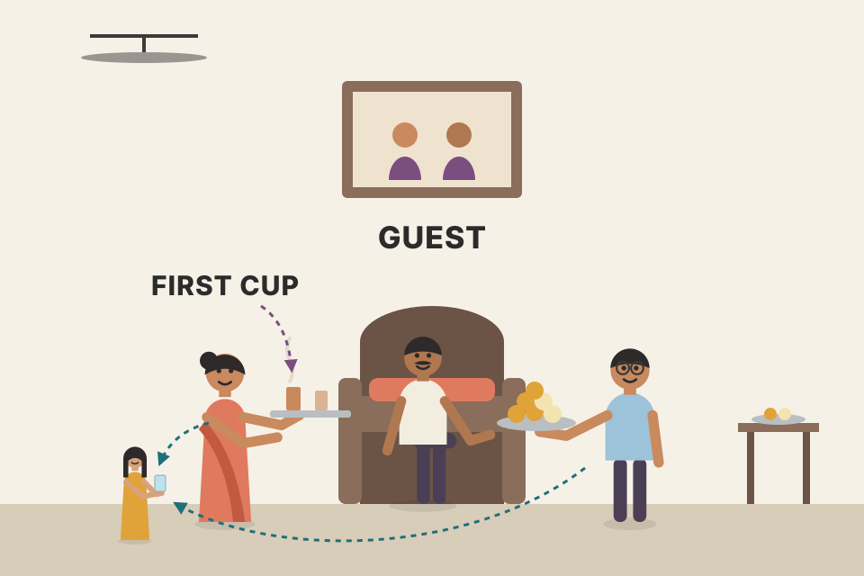
Every family in India has a version of the rule: the guest is God, so the visitor gets the best chair, the first cup of chai and the steel plate with the most sweets. Nobody explains it; children absorb it by watching. Carnegie is asking you to treat everyone (the clerk, the junior engineer, the auto driver) a little like that guest.
Where it breaks: hospitality can be pure ritual, done the same way for every guest. Carnegie's version is personal: not the best chair for everyone, but noticing what this person is proud of. Ritual politeness is the floor; specific, honest recognition is the point.
What's happening behind it
The book's explanation: since the hunger to feel important is universal and deep, anyone who feeds it honestly is welcome, and anyone who wounds it makes an enemy. The Golden Rule is the oldest form of the same insight: you know what you hunger for, so assume others hunger for it too.
Beyond the book: versions of the rule do appear across traditions (the Mahabharata's "do not do to others what would be painful to you", Confucius's "what you do not wish for yourself, do not impose on others", Hillel's formulation in Judaism). Scholars note many are phrased negatively ("don't do"), while Carnegie uses the positive form ("give unto others"), which fits a chapter about actively giving recognition. Carnegie's exact dates are loose; treat them as "very old", not precise history. Modern psychology's version of the "deepest urge" is the need for relatedness and esteem (Maslow's esteem needs; Baumeister and Leary's 1995 "need to belong").
At work
"All the time, everywhere" at work means recognition is not a quarterly event. It is the "nice catch" in a PR review, the "thanks to Priya for the migration plan" at the start of a demo, the line in the release notes that names who did the hard part. A team where people feel important in their small world is one where they speak up, flag risks early and stay.
Interview angle. "How do you keep your team motivated?" Talk about recognition that is specific and frequent, given in public for the work and in private for the effort, rather than a reward programme.
Which is it? Appreciation or flattery
Each line is something you might say to a colleague. Decide whether it passes Carnegie's test, then tap to see.
Open all five, then look at what the good ones have in common.
The charity concert, two angry helpers, and a cash box
pdf p111
The first everyday case, told by a student of Carnegie's course, shows the law used on a small, awkward problem: two people who both think they are in charge.
David G. SmithEau Claire, Wisconsinrefreshment booth, charity concertRose and Jane
The situation. Smith had agreed to run the refreshment stand at a charity concert in a park. When he arrived he found two older women standing at the booth in a very bad mood: each believed she was running it. Before he could work out what to do, a member of the organising committee walked up, handed him the cash box, thanked him for taking charge, introduced Rose and Jane as his helpers, and hurried off. Nobody spoke.
The move. Smith saw that the cash box stood for authority. So he gave it to Rose, saying he might get the money muddled and would feel better if she looked after it. Then he asked Jane to show the two teenagers assigned to the stand how to work the soda machine, and to be in charge of that part.
The result. A pleasant evening: Rose happily counted the money, Jane supervised the teenagers, and Smith got to enjoy the concert.
Why it worked. The fight was never about soda. Each woman wanted to feel important, and the committee had just taken that away from both by handing control to a newcomer. Smith gave each of them a real, visible area of responsibility, and a small confession of his own weakness ("I might not keep the money straight") made handing over the box feel natural rather than like a demotion for him.
Carnegie's comment after the story: you do not need to be an ambassador to France or the head of your club's clambake committee before using this. You can work small miracles with it almost every day.
Picture it
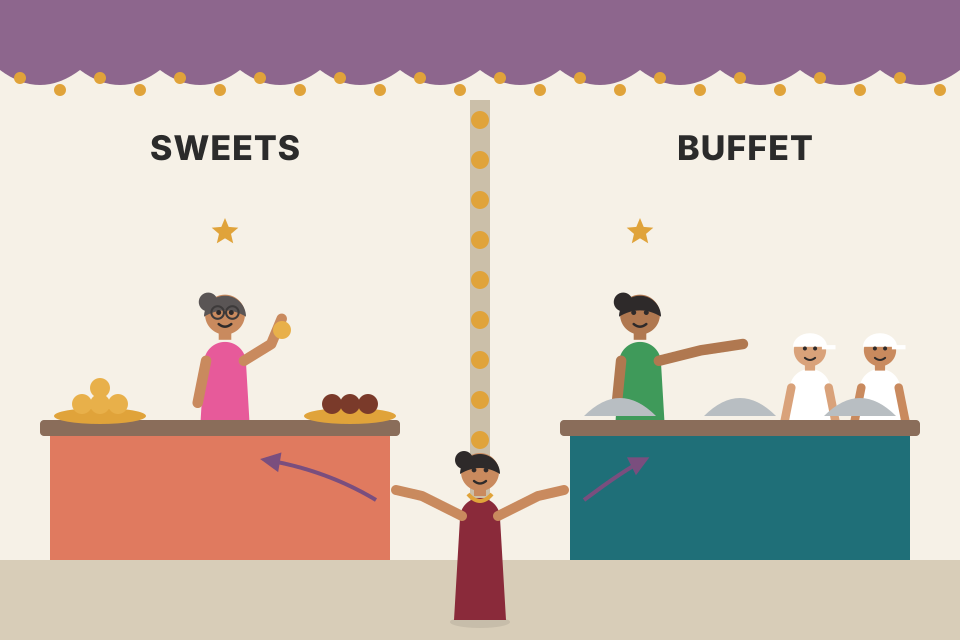
At a family wedding, two aunts both believe they are in charge of the food. The groom's mother does not pick a winner. She asks one aunt to handle the sweets counter ("nobody judges laddoos like you") and the other to supervise the caterers at the main buffet ("they'll only listen to you"). Both spend the evening proudly bossing their own corner.
Where it breaks: this works when there is enough real responsibility to share. If there is truly one decision and one owner (who signs the cheque, who approves the release), splitting the role invents fake jobs, and people notice. Then you need an honest conversation about who owns what.
What's happening behind it
The book's explanation: the women's bad mood was wounded importance. Smith fed it instead of competing with it, and as a bonus his own load disappeared.
Beyond the book: management writers call this delegating ownership rather than tasks: people care for what they feel is theirs. Smith also used a small self-deprecating line to lower his own status, a classic way to reduce rivalry with someone who feels displaced.
At work
Two senior engineers both feel they own the new service's architecture, and a manager has just announced you as "tech lead". Instead of defending the title, split real ownership: "Ana, would you own the data model and migration plan? You know the old schema better than anyone. Ravi, would you own the API contract and the client SDK review?" You coordinate. They each have a visible, real domain.
Interview angle. "Tell me about a time you resolved a conflict over ownership." This is the shape of a strong answer: notice the conflict is about status, not tasks; give each person a genuine area; keep yourself as the connector, not the boss.
Which response? The two-owner problem
Pick a response to see how Carnegie would judge it.
Making people glad to do what you suggest (titles, authority): Part Four, Ch.9.
04 · EVERY DAY
"I'm sorry to trouble you": the little courtesies that oil the day
pdf p111
Carnegie's next example is even smaller than the post office: a wrong order at a restaurant.
The case. You ordered fries and the server brings mashed potatoes. Instead of "That's not what I ordered", say something like "I'm sorry to trouble you, but I'd prefer the fries." The server will probably say it's no trouble and be glad to change it, because you have shown them respect.
The phrases. Carnegie lists the small courtesies he has in mind:
"I'm sorry to trouble you…""Would you be so kind as to…?""Won't you please…?""Would you mind…?""Thank you."
He says such phrases oil the gears of an otherwise monotonous daily grind, and calls them a mark of good upbringing.
Dated wording. The book says "waitress" and "the hallmark of good breeding". Today: "server", and "a sign of good manners". The idea has aged well; the vocabulary has not.
Why this belongs in a chapter on importance. The courtesy phrases do one thing: they treat the other person's time and effort as worth something. "Would you mind…?" admits they could say no. "Sorry to trouble you" admits you are asking for their effort. That is a tiny dose of "you matter", given to someone who usually hears only demands.
Picture it
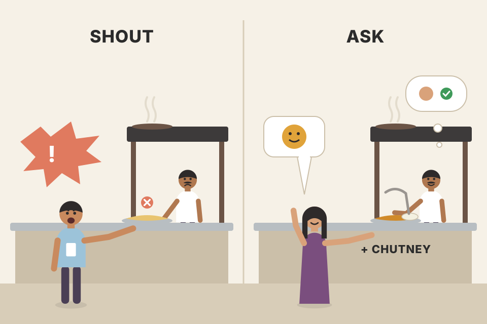
Two customers at the same Bengaluru darshini both get the wrong dosa. One shouts "I said masala, not plain!" across the counter. The other says "Anna, sorry, small mistake, I'd ordered masala, can you change it?" Both get a masala dosa. Only one of them gets an extra spoon of chutney, a smile, and the same cook remembering their order next week.
Where it breaks: politeness phrases can be said in a tone that cancels them ("would you mind…" through gritted teeth). Words are the wrapping; the respect has to be in the voice too. And in some settings very formal phrases sound distant, so use the local warm version ("anna", "bhaiya", first name).
What's happening behind it
The book's explanation: a request phrased with courtesy shows respect, and respect makes people want to help.
Beyond the book: linguists Penelope Brown and Stephen Levinson's politeness theory (1987) explains why: every request threatens the other person's freedom ("face"), and phrases like "would you mind" and "sorry to bother you" soften that threat. Research on workplace incivility (Christine Porath and Christine Pearson) finds the reverse is costly: people treated rudely put in less effort and make more mistakes afterwards.
At work
The engineering version of the mashed potatoes is the ping to another team: "Your API is returning 500s, fix it." versus "Sorry to pull you in on a Friday. We're seeing 500s from the orders API since about 3 p.m. Would you mind taking a look when you can? Logs are in the thread." Same request, same urgency. One gets defensiveness; the other gets help, often faster.
Rewrite it
Pick a blunt message, decide how you would rewrite it, then reveal a Carnegie-style version and what changed.
Worked example: the same ask, three ways
You need a teammate in another time zone to review your PR before your release tomorrow.
Demand
"Need your review on #881 ASAP, release is tomorrow."
Treats them as a step in your pipeline. They may do it, grudgingly, and remember.
Courtesy + importance
"Sorry to land this late in your day. Would you mind looking at #881? You wrote the original caching layer, so you're the one person who'll spot if I broke something. Release is tomorrow; thank you."
Admits the imposition, gives a true reason they matter, says thanks.
Hall Caine: the blacksmith's son who praised a poet
pdf p112
Now Carnegie shows how far one act of sincere admiration can carry a person, using a famous novelist of the early 1900s.
Hall CaineDante Gabriel RossettiLondonGreeba Castle, Isle of Man
Who he was. Hall Caine's novels (The Christian, The Deemster and The Manxman among them) were bestsellers read by millions in the early twentieth century. He was a blacksmith's son with no more than eight years of schooling, yet he died the richest writer of his time.
The move. As a young man Caine loved sonnets and ballads and read everything by the poet and painter Dante Gabriel Rossetti. He wrote a lecture celebrating Rossetti's artistic achievement, and then sent a copy to Rossetti himself.
What happened. Rossetti was delighted. Carnegie imagines him thinking that any young man with such a high opinion of his work must be brilliant. Rossetti invited the blacksmith's son to London to be his secretary. That was the turning point: through Rossetti, Caine met the leading writers of the day, took their advice and encouragement, and launched the career that made him famous.
The outcome. His home, Greeba Castle on the Isle of Man, became a destination for tourists from all over the world, and he left an estate worth millions of dollars. Carnegie's point: he might have died poor and unknown if he had not written an essay admiring a famous man.
Carnegie's two lessons. First, the "stupendous power" of sincere, heartfelt appreciation. Second, a fact about the receiver: Rossetti thought of himself as important, and that is not strange, because almost everyone thinks of themselves as important, very important. Famous people are no exception; Eastman (plate 10) will make the same point even more strongly.
Picture it
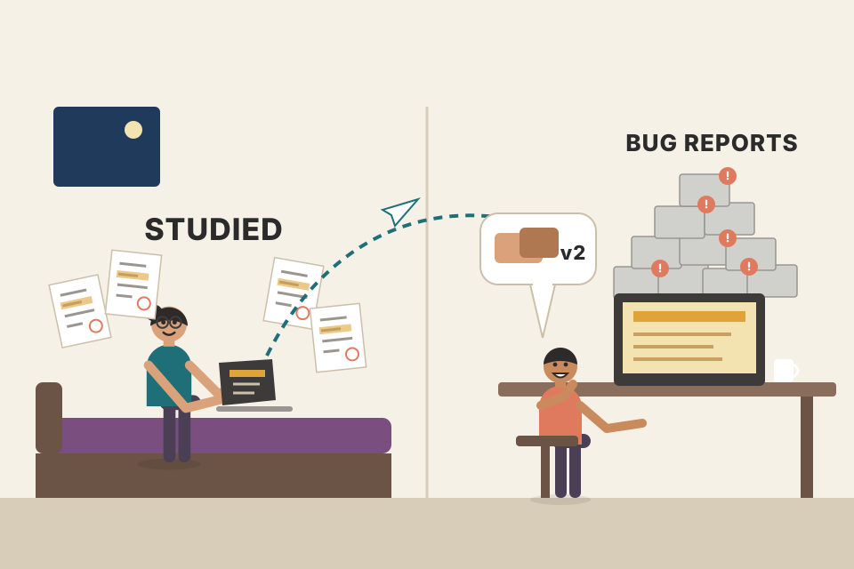
A college student in Pune writes a long, careful blog post on why a particular open-source maintainer's library design is so elegant, and tags her. The maintainer, who mostly gets bug reports and complaints, reads it twice, shares it, and replies: "Want to help with the next major version?" Two years later the student is a core contributor with a job offer from the company that sponsors the project.
Where it breaks: Caine's lecture worked because his admiration was real and deep: he had read everything. A shallow "great library!" post written to get noticed is closer to flattery, and maintainers see dozens of those. The analogy holds only if the study is genuine.
What's happening behind it
The book's explanation: Rossetti, like everyone, wanted his work recognised. A young man who had obviously studied it closely gave him exactly that, and Rossetti responded by thinking well of the young man ("he must be brilliant").
Beyond the book: psychologists call this reciprocal liking: we tend to like people who we believe like us, and to see them in a better light. It also matches the "self-verification" idea: people are drawn to those who see them the way they hope to be seen. Historical note: Caine did become Rossetti's secretary and companion in the early 1880s and later wrote Recollections of Rossetti (1882). Carnegie's "richest literary man of his time" is the book's claim; we have not checked it.
At work
Many engineering careers turn on a Hall Caine moment: a thoughtful issue comment, a write-up of how someone's talk changed your approach, a careful review of a senior engineer's RFC that shows you really read it. Specific, informed appreciation of someone's work is one of the few ways a junior person can get the attention of a busy senior one, because it offers something they rarely get.
Interview angle. When asked "Why do you want to work here?", the Hall Caine answer names a specific thing the team built (a blog post, an open-source project, an architecture choice) and says honestly what you learned from it. Generic praise of "your culture and mission" is flattery; this is appreciation.
Connects to
Talking in terms of the other person's interests: Part Two, Ch.5.
Being genuinely interested first (Caine had read everything Rossetti wrote): Part Two, Ch.1.
06 · A CLASSROOM
Chris, the shy boy, and the advanced class
pdf p112–113
Carnegie says many people's lives could change if only someone made them feel important. His example comes from a teacher in his course.
Ronald J. RowlandCaliforniaarts and crafts teacherChris, aged 14
The situation. Rowland taught a beginners' crafts class and an advanced one. The advanced class had become a kind of status symbol: getting into it meant you had earned it. In the beginners' class was Chris: very quiet, shy, lacking confidence, the kind of student who usually gets overlooked.
The move. One Wednesday, watching Chris work hard at his desk, Rowland sensed real potential in him and asked whether he would like to join the advanced class.
What happened. The boy struggled not to cry. He asked whether he was really good enough; Rowland told him he was. Rowland had to step out because he was close to tears himself. Chris left that day standing visibly taller and thanked him with a confident voice.
What Rowland did next. He said Chris taught him a lesson he would never forget: how deeply we all want to feel important. To keep it in mind he made a sign reading "YOU ARE IMPORTANT" and hung it at the front of his classroom, for the students to see and to remind himself that every student he faced was equally important.
"Who me, Mr. Rowland? Am I good enough?"Chris, as Rowland reported it (pdf p113)
Picture it
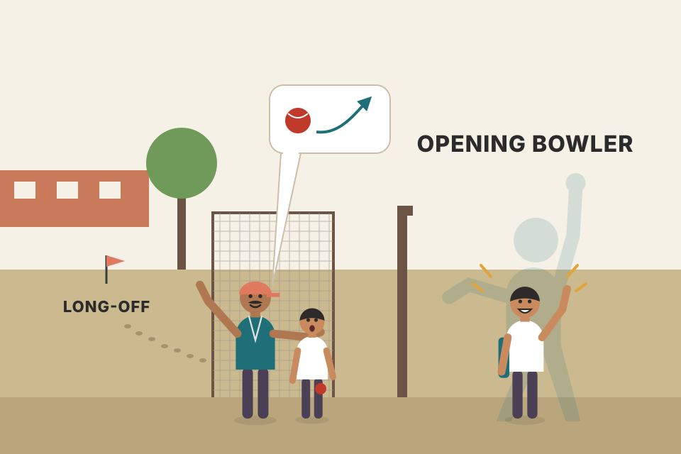
In a school cricket team in a small town, the quiet boy who always fields at long-off and never complains is suddenly told by the coach: "From tomorrow you're opening the bowling. I've watched your line in the nets for weeks." He walks home a different person. His bowling improves partly because he now believes the coach sees something in him.
Where it breaks: the coach (and Rowland) gave a real opportunity based on real ability, not just a nice word. If the boy is put into a role he cannot yet handle only to make him feel good, the confidence can turn into public failure. Recognition has to be honest about readiness.
What's happening behind it
The book's explanation: the desire to feel important is so deep that even a shy fourteen-year-old who never asks for attention is hungry for it. Being chosen told Chris that someone had noticed him, and his whole bearing changed.
Beyond the book: this is close to the Pygmalion effect studied by Robert Rosenthal and Lenore Jacobson (1968): teachers' expectations of students can shape how those students perform. The size and reliability of that effect has been debated since, but the everyday version is well supported: people tend to rise or sink to what they believe the people around them expect.
At work
Every team has a Chris: the quiet engineer whose PRs are solid, who never speaks in planning. Asking them to lead the next design review, own an on-call improvement, or present their work at the demo can change how they show up. The sign on the wall is the other half: as a lead, treat every person on the team, not only the loud ones, as equally important.
Interview angle. "Tell me about a time you developed someone on your team." Rowland's story is the template: you noticed potential no one else was paying attention to, offered a real stretch opportunity, and supported them in it.
Between the stories, Carnegie states the general fact that makes the principle work.
The claim. Nearly every person you meet feels superior to you in some way. A sure way to their heart is to let them see, subtly, that you recognise their importance, and to recognise it sincerely.
Emerson's version. Ralph Waldo Emerson said that every person he met was his superior in some way, and in that way he learned from them.
The sad side. Carnegie adds that people with the least real achievement often prop up their egos with noise and showing off, which he finds sickening to watch. He quotes Shakespeare's Measure for Measure on proud man, dressed in "a little brief authority", playing such tricks before heaven that the angels weep.
"Every man I meet is my superior in some way."Emerson, quoted by Carnegie (pdf p113)
How to read this. The first two points are an instruction: look for the area where the other person is genuinely ahead of you (a skill, a piece of knowledge, an experience), and let them feel that you see it. The third is a warning sign: when someone is loud about their small authority (the clerk who makes you wait, the reviewer who blocks a PR over style), it is often a starved sense of importance showing. Feeding that hunger honestly tends to calm the show.
Try it: where is each person ahead of you?
Emerson's line as a game. Each card is someone you might overlook. Tap to see one way they are very likely your superior, something you could learn and honestly admire.
Open them all, then try it on three real people tomorrow.
Picture it
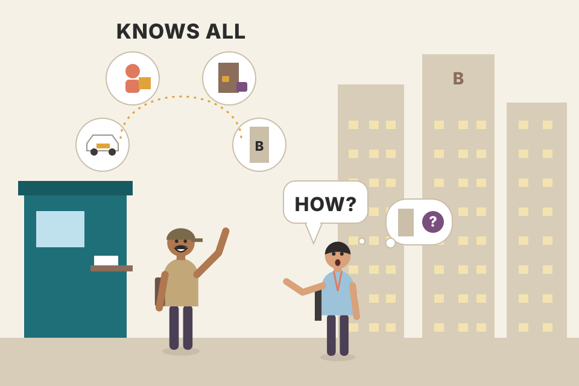
Your building's watchman in Gurugram knows every resident's car, every delivery agent by face and which flats are empty for the holidays. You, with a computer science degree, could not tell him which tower your own neighbour lives in. Ask him how he remembers it all, and watch him light up.
Where it breaks: "everyone is your superior in some way" can be said in a patronising tone ("even he knows something!"). The respect has to be real, not a lesson in humility you are performing for yourself.
What's happening behind it
The book's explanation: everyone has an area where they are proud and competent. Recognising it meets the deepest hunger Carnegie has been describing. Those who have little to be proud of often shout the loudest, which shows how strong the hunger is.
Beyond the book: the "brief authority" pattern has research behind it. Studies of power and status (for example Nathanael Fast and colleagues, 2012) find that people who hold power but lack respect are the most likely to act demeaning towards others. Respect, not more power, is what reduces it. So acknowledging the gatekeeper's expertise is not only kind; it is the fix.
At work
The DBA who guards production access, the security reviewer, the release manager: gatekeepers with a little brief authority. Engineers often treat them as obstacles and get slowed down further. Treating them as the experts they are ("You've seen more bad migrations than anyone here; what would you check in this one?") usually turns a blocker into an ally.
Interview angle. "How do you work with people who block your work?" Show that you looked for what they know that you don't, and used it, instead of escalating.
Letting people save face when they are wrong: Part Four, Ch.5.
08 · A LONELY HOUSE
The old aunt who gave away her late husband's Packard
pdf p113–115
The first of four stories of "remarkable results" from Carnegie's own course. A Connecticut lawyer, who asked to stay anonymous because of his relatives, is called Mr. R—.
Mr. R—, attorneyConnecticut → Long Islandhouse built 1890a mint-condition Packard
The situation. Soon after joining the course, Mr. R— drove with his wife to visit her relatives on Long Island. She left him chatting with an elderly aunt and went off to see the younger relatives. He was due to give a talk in class about applying appreciation, so he decided to practise on the aunt, and looked round the house for something he could honestly admire.
The move. He guessed the house dated from about 1890 (she confirmed it was that exact year) and said it reminded him of the house he was born in: beautiful, solid, roomy, the kind nobody builds anymore.
What happened. She agreed warmly, complained that young people only want small flats and cars, and then, her voice full of memories, told him it was a dream house built with love: she and her late husband had dreamed of it for years and planned it themselves without an architect. She showed him through the whole place, and he admired, sincerely, the treasures she had collected over a lifetime of travel (paisley shawls, an old English tea set, Wedgwood china, French furniture, Italian paintings, silk curtains from a French chateau). Then she took him to the garage. On blocks stood a Packard in perfect condition, a gift from her husband shortly before he died; she had not ridden in it since. Because he appreciated beautiful things, she said, she was giving it to him.
He refused, and she would not have it. He said he could not accept: he was not even a blood relative, he already had a new car, and she had many relatives who would love it. She replied bitterly that those relatives were waiting for her to die to get the car, and would not. When he suggested selling it to a dealer, she was horrified at the idea of strangers driving her husband's gift around town. He could not refuse without hurting her, so he took it.
Carnegie's reading. Here was a woman alone in a big house with her antiques and memories. She had once been young, admired and sought after; she had built a home full of love and filled it with beautiful things. Now, isolated in old age, she was hungry for a little warmth and honest appreciation, and nobody gave it. When someone finally did, it was like finding a spring in the desert, and nothing less than her most precious possession felt like enough thanks.
Picture it
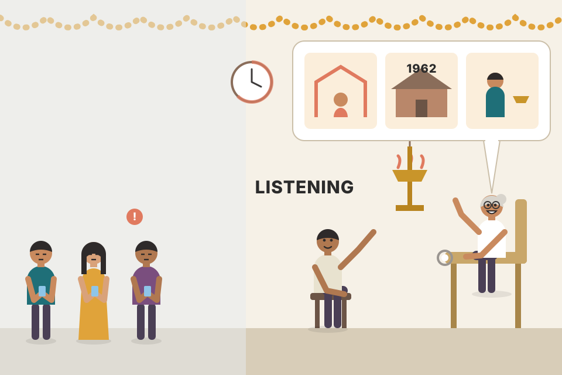
At a family function, the grandmother sits in a corner while the cousins talk about jobs and phones. One grandson-in-law asks about the old brass lamp on the wall. Forty minutes later he has heard about her wedding in 1962, the village where the lamp came from and the husband who bought it, and she has insisted he take home her husband's old HMT watch. The cousins are stunned: they have been visiting for years.
Where it breaks: Mr. R— did not plan to get a car, and the gift made him uncomfortable; he tried to refuse. If you go in hoping for the heirloom, the warmth is fake and the elderly (who have often had years to observe people) usually feel it. The story is about her loneliness, not about a technique for getting gifts.
What's happening behind it
The book's explanation: the hunger for recognition does not fade with age; isolation makes it sharper. Her relatives valued her for what they would inherit; Mr. R— valued her life and taste. The size of her gift measured how starved she had been.
Beyond the book: loneliness in old age is now treated as a public-health issue (the US Surgeon General's 2023 advisory on social isolation compared its health risks to smoking). Research on reminiscence (inviting older people to tell the stories of their lives and objects) finds it improves mood and sense of meaning. Mr. R— did, by instinct, what therapists now do on purpose.
At work
The aunt has an office equivalent: the long-tenured engineer who built the original system everyone now calls "legacy". New hires mock the code; nobody asks why it was built that way. Ask them ("This was written before cloud queues existed, right? How did you get it to survive the 2019 traffic spike?") and you often get the history, the hidden traps, and a loyal ally on every future migration.
Interview angle. "How do you approach working with a legacy codebase?" Mention that you talk to the people who built it with real curiosity about the constraints they faced, which turns them from defenders of the old code into guides.
Worked example: the same visit, two ways
Polite but self-centred
"Nice place. So, my firm just won a big case…" Ten minutes of small talk about yourself, a glance at your phone, a relieved exit when your spouse returns.
She feels like furniture, as she does with every visitor.
What Mr. R— did
Find one thing you honestly like (the age of the house, the craftsmanship), ask a question about it, and connect it to something true in your own life. Then listen, ask about each object she shows you, and admire only what you really find beautiful.
She feels like the person who built something worth admiring.
Connects to
Encouraging people to talk about themselves: Part Two, Ch.4.
The lonely as the most hungry for appreciation: Carnegie's similar argument in Ch.2.
09 · A HOBBY NOTICED
The landscaper, the judge's prize dogs, and a puppy
pdf p115–116
A second course member's story, this time with a busy, powerful man who had every reason to keep it short.
Donald M. McMahonLewis and Valentine, Rye, New Yorka famous attorney ("Judge")1 hour 15 minutes
The situation. McMahon was superintendent at a firm of nurserymen and landscape architects. Soon after hearing Carnegie's talk, he was landscaping the estate of a well-known lawyer. The owner came out to tell him where to plant a bank of rhododendrons and azaleas.
The move. McMahon told the judge he had a lovely hobby: he had been admiring his beautiful dogs, and had heard they won many blue ribbons each year at the show in Madison Square Garden.
What happened. The effect was striking. The judge said he had great fun with his dogs and asked if McMahon wanted to see the kennel. He spent nearly an hour showing off the dogs and their prizes, even bringing out their pedigrees and explaining the bloodlines behind their looks and intelligence. Then he asked whether McMahon had children. A son, McMahon said. Would the boy like a puppy? He would be thrilled. So the judge gave him one, and, deciding McMahon would forget spoken instructions, went inside and typed out the pedigree and the feeding instructions.
The tally. A puppy worth several hundred dollars, and an hour and fifteen minutes of a busy man's time, given mostly because McMahon had honestly admired his hobby and what he had achieved with it.
What to notice. McMahon did his homework (he knew about the blue ribbons), picked the thing the judge was proudest of (not his law career, which everyone praised, but his dogs), and then mainly listened. The judge did almost all the talking.
Picture it
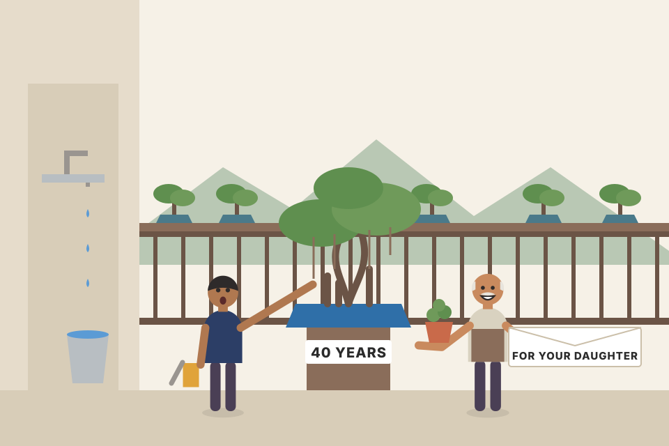
A plumber fixing a pipe in a retired colonel's flat in Dehradun notices the rows of bonsai on the balcony and says he has never seen a forty-year-old banyan in a pot. The colonel abandons the leaking tap, gives him a tour of every tree, and sends him home with a small jade plant in a pot "for your daughter", with care instructions written on the back of an envelope.
Where it breaks: the plumber still needs to fix the tap. McMahon's hour with the dogs was the client's choice and on the client's time. In a job with a schedule, appreciation opens the door; it does not replace the work you were hired for.
What's happening behind it
The book's explanation: even an eminent, busy person craves recognition for the thing they personally love and have worked at. A hobby is often closer to someone's sense of self than their job, and it is praised far less.
Beyond the book: psychologists studying the "IKEA effect" and identity find that people value most what they have personally invested effort in. Praising someone's job title says little; praising the thing they chose to pour time into speaks to who they are. The judge's typed instructions are a nice sign of that: he wanted his dog's line looked after properly.
At work
A client CTO is known for a side project: a widely used open-source tool, a popular conference talk, a home-lab blog. Opening a call with an honest, informed remark about it ("I used your Postgres tuning post last month and cut our p99 by a third") does more for the relationship than a polished deck. Then let them talk.
Interview angle. Researching your interviewer (their talk, their team's blog post) and asking one genuine question about it is McMahon's move. Keep it short and real; the aim is to show interest, not to flatter.
Connects to
Talking in terms of the other person's interests (Roosevelt preparing for each visitor's hobby): Part Two, Ch.5.
Listening while they talk about themselves: Part Two, Ch.4.
10 · THE BIG ORDER
George Eastman, five minutes that became a lunch, and $90,000 of theatre chairs
pdf p116–118
The longest story in the chapter. Carnegie uses it to show that even one of the most successful men alive "craved little recognitions" just like the rest of us.
George Eastman (Kodak)James Adamson, Superior Seating Co.Rochester, NY5 minutes allowed → 2+ hours$90,000 order
Who Eastman was. The founder of Kodak, inventor of the transparent film that made motion pictures possible, with a fortune of about a hundred million dollars and worldwide fame.
The situation. Eastman was building the Eastman School of Music and Kilbourn Hall in Rochester. Adamson, president of a New York seating company, wanted the contract for the theatre chairs and got an appointment through the architect. The architect warned him: Eastman is strict, very busy, and if you take more than five minutes you have no chance. Say your piece and leave. Adamson planned to do exactly that.
The move. Once introduced, Adamson did not pitch. He said he had been admiring the office while they waited; as a man in the interior-woodwork business, he had never seen a more beautiful room. Eastman said he had almost forgotten: he had loved it when it was new, but now he came in with so much on his mind that he did not notice it for weeks. Adamson ran his hand over a panel and asked if it was English oak, which has a slightly different texture from Italian. It was, imported and chosen by a friend who was an expert in fine woods.
Two hours. Eastman showed him round the room, pointing out the proportions, colours and hand-carving he had helped design. At a window, he quietly listed the institutions he was funding (the University of Rochester, the General Hospital, the Homeopathic Hospital, the Friendly Home, the Children's Hospital), and Adamson warmly praised the idealism of using his wealth to ease suffering. Eastman unlocked a glass case and showed him the first camera he ever owned, bought from an Englishman. Adamson asked about his early struggles, and Eastman talked with feeling about a poor childhood: his widowed mother kept a boarding house while he worked as an insurance clerk, and fear of poverty drove him to earn enough so she would not have to work. Adamson kept asking and listening as Eastman described his experiments with dry photographic plates, working in the office by day and experimenting by night, sometimes for seventy-two hours straight, sleeping in his clothes.
The result. Adamson had walked in at 10:15 with a five-minute limit. One hour passed, then two, and they were still talking. Eastman then told him about some chairs he had bought in Japan, whose paint had peeled in the sun, so he had bought paint and repainted them himself. Would Adamson like to see his work? Come to lunch. After lunch Eastman proudly showed off chairs worth a few dollars, because he had painted them. The seating order was worth $90,000. Carnegie simply asks who you think got it. Adamson and Eastman remained close friends until Eastman's death.
Step through it: how five minutes became a friendship
Picture it
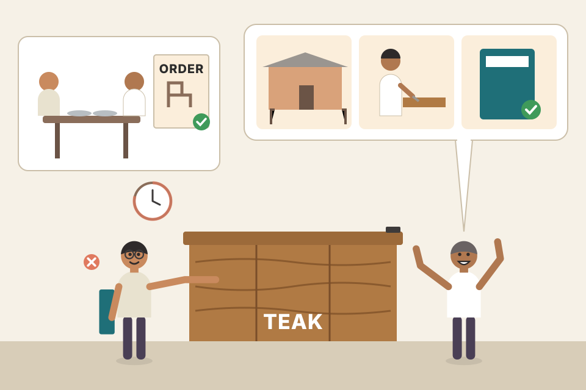
A furniture supplier meets the busy owner of a Bengaluru restaurant chain to pitch dining chairs. Instead of opening the catalogue, he says the teak bar counter in the office is the finest joinery he has seen in years, and asks who made it. The owner talks for an hour: his father's first dhaba, the carpenter from Kerala who built the counter, the first loan. Then he takes the supplier to lunch at the flagship outlet. The chair order follows without a single slide.
Where it breaks: Adamson's praise worked because he was a real expert in woodwork; his compliment on English oak carried weight. A salesperson faking enthusiasm for something they know nothing about sounds like a script. And the order still had to be fulfilled well; the friendship lasted because the product was good too (the book does not say, but you can assume it).
What's happening behind it
The book's explanation: fame and money do not satisfy the desire to feel important; Eastman still glowed when someone noticed his office, his charities and his painted chairs. Adamson gave him attention and appreciation he rarely got, because everyone else came to him wanting something and kept to five minutes.
Beyond the book: sales research agrees on two parts of this. Buyers trust people who show expertise relevant to them (Adamson's comment on oak signalled skill in exactly his own field). And people who talk about themselves get a real reward: Harvard brain-imaging studies (Tamir and Mitchell, 2012) found that disclosing information about oneself activates the same reward regions as food and money. Adamson let Eastman have two hours of that.
At work
The engineering Adamson is the vendor engineer, consultant or new team member who, before proposing changes, shows real, informed appreciation of what is already there: "I read the original design doc for this pipeline; the idempotency key scheme is really clever. How did you land on it?" You often get the history, the real constraints, and a decision-maker who now wants you to succeed.
Interview angle. "Tell me about a time you won over a skeptical stakeholder." Don't describe a better pitch; describe how you first understood and acknowledged what they had built and cared about, and how the conversation changed after that.
Worked example: the first sixty seconds with a busy VP
What the architect advised
"Thanks for the time. I'll be quick: our platform reduces infra cost by 30%, here are three slides…"
Efficient, forgettable. You get your five minutes and nothing more.
What Adamson did
"Before we start: I've been reading about the observability setup your team open-sourced last year. I work on tracing tooling and I've rarely seen sampling done that cleanly. Was that your call?"
True, informed, about them. The meeting is now about them, and that is the meeting they will remember.
Caution: this works only if the remark is honest and you know the subject. Otherwise do the five-minute pitch; it is better than fake admiration.
Connects to
Encouraging people to talk about themselves (Adamson asked, then listened): Part Two, Ch.4.
Letting the other person do most of the talking in persuasion: Part Three, Ch.6.
11 · KEEPING SOMEONE
Claude Marais and Paulette's resignation letter
pdf p118–119
The last story is the most useful for anyone who manages people: the principle used to keep a valued employee who has already decided to leave.
Claude Maraisrestaurant owner, Rouen, FrancePaulette, 5 yearsstaff of 21
The situation. Paulette had worked for Marais for five years and was the key link between him and his staff of twenty-one. One day a registered letter arrived: her resignation.
His honest diagnosis. Marais was surprised and hurt; he had thought he treated her fairly and listened to her needs. But on reflection he admitted that because she was a friend as well as an employee, he had probably taken her for granted, and may even have asked more of her than of anyone else.
The move, in three steps.
In private: he told her he could not accept the resignation, that she meant a great deal to him and to the business, and that she was as important to the restaurant's success as he was.
In public: he said the same in front of the whole staff.
At home: he invited her to his house and repeated his confidence in her with his family present.
The result. Paulette withdrew her resignation. Marais says he could now rely on her more than ever, and that he kept it up, regularly telling her how much he appreciated her work and how important she was to him and the restaurant.
Picture it
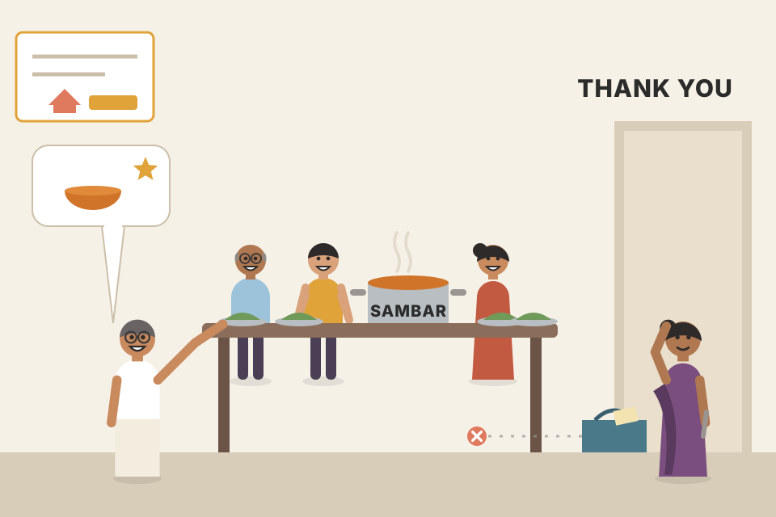
The family's long-time cook, almost part of the household for years, quietly tells the mother she is going back to her village. The father, who has never once praised her food in front of guests, does three things: tells her privately that the house will not run without her, says at Sunday lunch in front of everyone that her sambar is why relatives visit, and invites her family to the housewarming as guests. She stays, and the father now remembers to thank her every week.
Where it breaks: if she was leaving for better pay or to look after her own parents, no amount of recognition fixes that; you have to address the real reason. Marais's words worked because the real problem was being taken for granted. Recognition is not a substitute for fair pay or a reasonable workload.
What's happening behind it
The book's explanation: Paulette had been taken for granted, the opposite of being made to feel important. Marais fixed the cause, publicly and at personal cost, and then kept fixing it with regular appreciation so it would not drift back.
Beyond the book: employee surveys repeatedly list "not feeling valued or recognised" among the top reasons people quit (for example Gallup's recognition research and the Work Institute retention reports). They also show the trap Marais admits to: the most reliable people are the most likely to be overloaded and the least likely to be thanked, because nothing goes wrong around them. Note too that a counter-offer of recognition only works if things actually change afterwards; Marais's last sentence (he kept reinforcing it) is the part most managers skip.
At work
Your most dependable engineer resigns. Before the counter-offer spreadsheet, ask yourself Marais's question: have I been taking them for granted, giving them the hardest tickets because they never complain? Then tell them specifically what they mean to the team, say it where others can hear it (a team meeting, not just a DM), and change something real: workload, scope, title or pay, if those are the actual reasons.
Interview angle. "How do you retain strong engineers?" A good answer names recognition as an ongoing habit (not a rescue tactic), specific and public, combined with fixing the real causes like overload and growth.
Which response? Your best engineer hands in notice
Pick a response to see how Carnegie would judge it.
Connects to
Giving honest and sincere appreciation, the Part One root of this: Ch.2.
Praising every improvement, and being "lavish in your praise": Part Four, Ch.6.
12 · THE PRINCIPLE
Disraeli's advice, and Principle 6
pdf p119
Carnegie's last word goes to Benjamin Disraeli, the British prime minister, whom he calls one of the shrewdest men who ever ran the British Empire:
"Talk to people about themselves and they will listen for hours."Disraeli, quoted by Carnegie (pdf p119)
Principle 6
Make the other person feel important—and do it sincerely.
The two halves of the principle.
Half
What it asks
The chapter's evidence
The test
Make the other person feel important
Notice what they are proud of and let them see you noticed; give them real responsibility; treat their time and effort as valuable.
hair · cash box · courtesies · Rossetti · Chris · house · dogs · oak office · Paulette
Do they leave the conversation feeling bigger than when they came in?
…and do it sincerely
Admire only what you honestly admire; want nothing in return; mean it.
"What can I honestly admire?" · the crab-apple rebuke · Mr. R— trying to refuse the car
Would you say it if they could never do anything for you?
Six moves the chapter actually shows (our grouping of its stories):
1 · Name a specific admiration
The clerk's hair, the 1890 house, the English oak, the blue-ribbon dogs.
2 · Give real responsibility
Rose's cash box, Jane's soda machine, Chris's place in the advanced class.
3 · Use small courtesies
"Sorry to trouble you", "would you mind", "thank you".
4 · Study their work
Caine's lecture on Rossetti; Adamson's knowledge of oak.
5 · Ask, then listen
The aunt's dream house, the judge's pedigrees, Eastman's childhood.
6 · Say it publicly, and keep saying it
Marais: in private, before staff, at home, and regularly afterwards.
Picture it
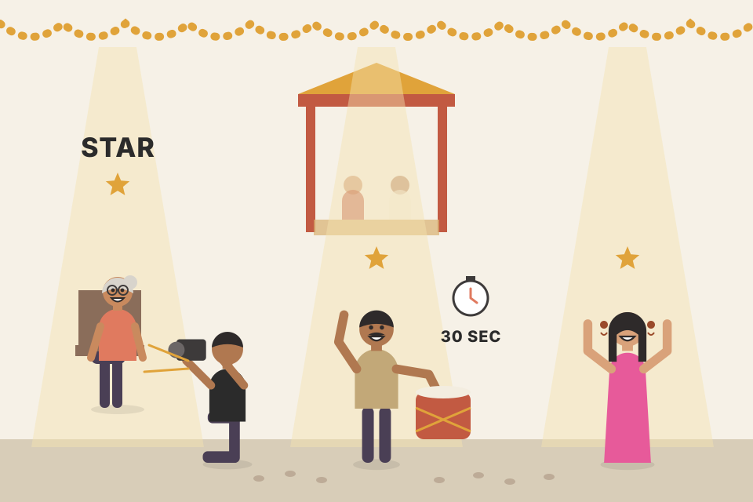
Think of a good wedding photographer at an Indian wedding. They do not only photograph the couple. They seek out the grandmother, the uncle who arranged the band, the cousin who did the mehendi, and make each one feel like the star for thirty seconds. At the end, everyone says what a wonderful photographer it was, though most of them spent the time talking about themselves.
Where it breaks: the photographer is paid to do it and it is partly professional technique. Carnegie wants the same attention without the invoice; if it is only a technique, it slides into the flattery he warns against.
What's happening behind it
The book's explanation: Disraeli's line sums up the chapter: people's favourite subject is themselves, and anyone who invites them to it is welcome. The sincerity clause is not a polite add-on; every story depends on the admiration being real.
Beyond the book: research on "liking" (summarised in Robert Cialdini's Influence) lists compliments as a reliable cause of liking, even when people suspect them, but also finds that praise perceived as manipulative causes a sharp backlash. Carnegie's "sincerely" is the line between those two outcomes.
At work
A one-line team habit for this principle: in every 1:1, before your agenda, name one specific thing the person did since the last one that you genuinely valued, and ask one question about something they care about. It takes a minute and is the most reliable way to make 1:1s feel like their meeting, not yours.
Connects to
All five earlier principles of Part Two are ways of doing this one (next plate).
The persuasion chapters that follow rely on it: letting the other person save face and feel the idea is theirs, starting with Part Three, Ch.1.
13 · PART TWO IN A NUTSHELL
Six ways to make people like you
pdf p119
The book ends Part Two with its six principles listed together. Each links to its chapter page. Read as a set, they describe one attitude: the other person is the most interesting and important person in the conversation.
PRINCIPLE 6Make the other person feel important—and do it sincerely.This chapter. The aim the other five serve. Ch.9, pdf p109–119.
How they fit together in one conversation (our example): you smile as they arrive (2), greet them by name (3), ask about the thing they care about (1, 5), listen properly while they answer (4), and say honestly what you admire in it (6). Every story in this chapter uses several at once: Adamson smiled, asked, listened, talked about Eastman's interests, and admired sincerely.
Self-audit: Part Two this week
Slide each to how often you did it in the past week (0 = never, 5 = most conversations). The readout is a rough nudge, not a score of your character; the weighting is ours (modelled).
Picture it
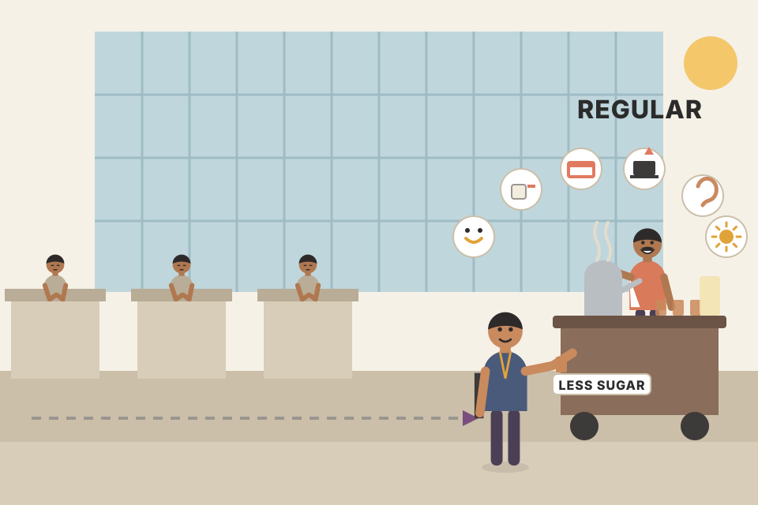
A good chaiwala outside a Bengaluru tech park does all six without thinking: he smiles when you walk up, remembers you take it "less sugar, extra strong", calls you by name, asks how the release went last week, listens while you complain, and tells you that you look less tired than yesterday. You walk past three other stalls to get to his.
Where it breaks: the chaiwala's warmth is also good business, and that is fine; Carnegie is not against benefiting. He is against faking. If the chaiwala's interest switched off the day you stopped buying, it would be a sales technique, not Part Two.
Connects to
Part One's three principles (don't criticize; give honest appreciation; arouse an eager want): Ch.1, Ch.2, Ch.3.
Next: Part Three, "How to Win People to Your Way of Thinking", beginning with "You Can't Win an Argument". Part Two makes people like you; Part Three uses that goodwill to change minds.
14 · WRAP-UP
Summary and key terms
pdf p109–119
Start small and want nothing. Carnegie made a bored post-office clerk's day by honestly admiring his hair. Asked what he wanted from him, he said: only the lasting feeling of giving something to someone who could give nothing back.
The one great law: always make the other person feel important. Dewey (the desire to be important) and William James (the craving to be appreciated) call it the deepest human urge; Zoroaster, Confucius, Lao-tse, Buddha, the Hindu scriptures and Jesus all taught some form of the Golden Rule. People want sincere appreciation, not cheap flattery. Use it all the time, everywhere.
Everyday uses. David Smith ended a turf war by giving Rose the cash box and Jane the soda machine. Small courtesies ("sorry to trouble you", "would you mind", "thank you") show respect and oil daily life.
How far it can go. Hall Caine, a blacksmith's son with eight years' schooling, became Rossetti's secretary and a rich, famous novelist after sending Rossetti a lecture praising his work. Shy Chris, invited into the advanced class, walked out visibly taller; his teacher hung up a "You are important" sign.
Why it works: almost everyone feels superior to you in some way (Emerson: every man is my superior in some way). Those with least to show often make the most noise ("a little brief authority").
The proof stories. An honest remark about an 1890 house led a lonely aunt to give Mr. R— her late husband's Packard. Admiring a judge's prize dogs got McMahon an hour's tour and a puppy worth hundreds of dollars. Admiring Eastman's office turned Adamson's five minutes into two hours, a lunch, a $90,000 order and a lifelong friendship. Telling Paulette, privately, before the staff and at home, that she mattered made her withdraw her resignation.
Disraeli: talk to people about themselves and they will listen for hours.
Principle 6: Make the other person feel important—and do it sincerely. It closes Part Two, whose six principles are all ways of saying "you matter".
Term or phrase
Meaning on this page
Where
Principle 6
Make the other person feel important—and do it sincerely.
pdf p119
"What can I honestly admire?"
The question to ask yourself before you speak; the word "honestly" is the filter.
pdf p109
The all-important law
Always make the other person feel important.
pdf p110
The Golden Rule
Treat others as you would want to be treated; taught by every major tradition, per Carnegie.
pdf p110–111
Sincere appreciation vs flattery
True, specific recognition versus cheap, insincere praise; people crave the first and see through the second.
pdf p110
All the time, everywhere
When and where to apply the law; not only on big occasions.
pdf p111
Little courtesies
"I'm sorry to trouble you", "Would you mind?", "Thank you": small signs of respect that oil daily life.
pdf p111
"You are important"
Rowland's classroom sign after Chris.
pdf p113
Superior in some way
Emerson's idea: everyone you meet knows or does something better than you.
pdf p113
A little brief authority
Shakespeare's phrase for people who show off small power to feed their ego.
pdf p113
Spring in the desert
Carnegie's image for appreciation reaching someone starved of it (the aunt).
pdf p115
Taken for granted
Marais's honest diagnosis of why Paulette resigned.
pdf p118
Part Two in a nutshell
The six ways to make people like you.
pdf p119
15 · USE IT
Practice this week
beyond the book
Small exercises, each with a way to tell whether it worked. The exercises are ours; the ideas are the chapter's.
The counter test, once a day. With one person you usually overlook (security, cleaning staff, a delivery agent, a support agent), ask "what can I honestly admire?" and say it in one specific sentence. Ask for nothing. Worked if: you see a real reaction (a smile, a story), and you notice the good feeling Carnegie describes on your side.
Specific, not generic. Replace every "great job" you write this week (Slack, PR approvals, release notes) with what exactly was good. Worked if: someone replies with more than an emoji, or mentions it later.
The cash-box move. Find one task you are holding only because you were handed it, and give it to someone who would feel important owning it. Worked if: they do it with more care than you would have, and you get time back.
Courtesy audit. Reread your last ten requests in chat. Add "could you", "would you mind" or "thanks" where they were missing, from now on. Worked if: response times or tone from other teams improve over the week.
The Marais check. Name the most reliable person on your team or at home. When did you last tell them specifically what they mean? Do it this week, once in private and once where others can hear. Worked if: they look surprised, which tells you it was overdue.
Eastman's two minutes. In your next meeting with someone senior or busy, start with one honest, informed question about something they built or care about before your agenda. Worked if: the meeting runs on their energy and you get more of their time or help than you asked for.
16 · LIMITS
Where it can go wrong
pdf p109–119 · plus beyond the book
The book's own caveats first.
Only what you honestly admire. Carnegie's first question at the counter has "honestly" in it, and Mr. R— looked for something he could honestly admire. If there is nothing, say nothing; don't invent.
Not to get something. His angriest paragraph in the chapter is aimed at the idea of appreciation as a tactic. Doing it for return makes you small and earns the failure that follows.
Sincere appreciation, not flattery. People crave the first and do not want "cheap, insincere flattery". The principle itself ends with "and do it sincerely".
The gifts were not the goal. Mr. R— tried hard to refuse the car; McMahon did not ask for the puppy. The rewards in the stories are side effects, not targets.
Beyond the book: our critique
The stories select for happy endings. A Packard, a puppy and a $90,000 order are memorable because they are rare. Most honest compliments get a smile and nothing else, and that is the point. If you are counting the outcomes, you have missed it.
It can become manipulation. Sales training has long used the Adamson story as a technique. The line is intent: are you interested in the person, or using interest as an opening? People, especially experienced ones, often feel the difference.
Power changes how praise lands. Praise from a manager to a report can read as evaluation, and praise from a report to a manager can read as currying favour. Keep it specific, about work, and spread fairly across the team so it is not seen as favouritism.
Appearance compliments need care. Carnegie's opening compliment is about a stranger's hair. In many workplaces today, comments on someone's body or looks can be unwelcome, especially across genders or seniority. Prefer to admire work, skill, choices and things people have made.
Recognition is not a substitute for fairness. Telling Paulette she mattered worked because being taken for granted was the problem. If the problem is pay, workload or growth, warm words alone can feel like a cheap replacement for the real fix.
Culture changes the dial. Lavish public praise is normal in some places and embarrassing in others. In many Indian and East Asian settings, singling out one person in public can feel uncomfortable or invite resentment from peers; private, specific thanks may land better. Adjust the delivery, keep the sincerity.
The history is loose. Carnegie's dates for religious teachers are rough and his attribution of the Golden Rule to every tradition flattens real differences. Treat the history as an illustration of how old the idea is, not as scholarship.
Dated wording. The book's "he/him" for everyone, "waitress" and "good breeding" are of their time. The principle is not.
17 · TEST YOURSELF
Check yourself
pdf p109–119
Try to answer before opening each one. The first half is story recall; the second half is using the principle.
1. What did Carnegie say to the post-office clerk, and how did he answer the man who asked what he wanted from him?
He asked himself what he could honestly admire, saw the clerk's fine head of hair, and said he wished he had hair like that. To the questioner he said that wanting something back would make him small; what he wanted and got was the lasting feeling of doing something for someone who could do nothing in return.
2. What is the "all-important law of human conduct", and which thinkers and traditions does Carnegie link it to?
Always make the other person feel important. He links it to John Dewey (the desire to be important) and William James (the craving to be appreciated), and to the Golden Rule as taught by Zoroaster, Confucius, Lao-tse, Buddha, the sacred books of Hinduism and Jesus.
3. How did David Smith settle the quarrel at the refreshment booth?
Seeing that the cash box symbolised authority, he gave it to Rose, saying he might muddle the money, and put Jane in charge of showing the teenagers how to work the soda machine. Both were happy, and he enjoyed the concert.
4. What did the wrong potatoes teach, and which phrases does Carnegie list?
Ask for a change with courtesy ("I'm sorry to trouble you, but I prefer…") and the server will gladly fix it, because you showed respect. The phrases: "I'm sorry to trouble you", "Would you be so kind as to…?", "Won't you please?", "Would you mind?", "Thank you".
5. How did Hall Caine's admiration for Rossetti change his life?
He wrote a lecture praising Rossetti's art and sent him a copy. Rossetti, delighted, invited the blacksmith's son to London as his secretary, where Caine met the leading writers of the day. He became a bestselling novelist, lived at Greeba Castle on the Isle of Man, and left a multimillion-dollar estate.
6. What did Ronald Rowland do for Chris, and what did he do afterwards?
He invited the shy fourteen-year-old into the prestigious advanced crafts class; Chris, near tears, asked if he was good enough and left looking taller. Rowland then hung a "You are important" sign at the front of his classroom to remind himself every student was equally important.
7. Why did the elderly aunt give Mr. R— the Packard?
He sincerely admired her house (built in 1890 and planned by her and her late husband) and her treasures. Lonely, and convinced her relatives were only waiting to inherit, she was starved for appreciation; his was "a spring in the desert", and only her most precious possession felt like enough thanks. He tried to refuse but could not without hurting her.
8. In the Eastman story, how long was Adamson told he could stay, how long did he stay, and what did he get?
He was warned not to take more than five minutes. He arrived at 10:15 and was still talking two hours later, then was invited to lunch to see chairs Eastman had repainted himself. He got the $90,000 seating order and a friendship that lasted until Eastman's death.
9. What three things did Claude Marais do when Paulette resigned, and what did he admit about himself?
He told her privately she was as important to the restaurant as he was, said the same in front of the whole staff, and repeated it at his home with his family present. He admitted he had probably taken her for granted and asked more of her than of others. She withdrew her resignation, and he kept showing appreciation.
10. List the six principles of Part Two.
1. Become genuinely interested in other people. 2. Smile. 3. Remember that a person's name is to that person the sweetest and most important sound in any language. 4. Be a good listener; encourage others to talk about themselves. 5. Talk in terms of the other person's interests. 6. Make the other person feel important, and do it sincerely.
11. Application: two senior engineers both expected to lead a project you were given. What would Smith do?
Give each a real, visible area to own that fits their strengths (for example the data model and migration for one, the API contract for the other), and act as the connector rather than the boss. Don't defend the title.
12. Application: you want to praise a teammate. Which is better: "You're a rockstar!" or "Your rollback plan meant we recovered in four minutes last night"? Why?
The second. It is specific, true and checkable, and it shows you noticed the actual work. The first is generic and sounds like flattery. Carnegie's test: honest, specific, about them, wanting nothing.
13. Application: you are meeting a busy VP who gives everyone five minutes. How do you use Adamson's lesson without being fake?
Open with one honest, informed remark or question about something they built or care about, only if you genuinely know and admire it, and then listen. If you have nothing genuine to say, do the short pitch; fake admiration is worse than none.
14. Interview: "Tell me about a time you kept a valued team member from leaving." How does this chapter shape a strong answer?
Follow Marais: you asked why, honestly owned your part (taking them for granted, overloading them), told them specifically what they meant to the team in private and in public, changed something real, and kept the appreciation going afterwards rather than treating it as a one-off rescue.
15. What does Emerson's line have to do with gatekeepers at work?
Everyone is your superior in some way. The DBA or security reviewer who seems to be blocking you usually knows something you don't; recognising that sincerely ("what would you check here?") feeds the need for importance that otherwise shows up as "a little brief authority", and turns them into an ally.
18 · SOURCES
References
pdf p109–119
Book pages and other sources used on this page
Dale Carnegie, How to Win Friends and Influence People, revised edition (1981; Simon & Schuster 2009 printing), Part Two, Chapter 6, "How to Make People Like You Instantly", pdf p109–119, including the Part Two "In a Nutshell" (pdf p119). Stories by page: the post-office clerk p109–110; the law, Dewey, James, the Golden Rule, Schwab p110–111; David G. Smith p111; little courtesies p111; Hall Caine p112; Ronald Rowland and Chris p112–113; Emerson and Shakespeare p113; Mr. R— and the Packard p113–115; Donald McMahon and the judge p115–116; George Eastman and James Adamson p116–118; Claude Marais and Paulette p118–119; Disraeli, Principle 6, In a Nutshell p119.
Quotations inside the chapter: Emerson; Shakespeare, Measure for Measure (Act 2, Scene 2); Disraeli; Charles Schwab; William James.
Beyond the book (named where used): E. Boothby and V. Bohns, "Why a simple act of kindness is not as simple as it seems" (2020); G. Sandstrom and E. Dunn, "Is efficiency overrated?" (2014); R. Baumeister and M. Leary, "The need to belong" (1995); A. Maslow on esteem needs; P. Brown and S. Levinson, Politeness (1987); C. Porath and C. Pearson on workplace incivility; R. Rosenthal and L. Jacobson, Pygmalion in the Classroom (1968); N. Fast, N. Halevy and A. Galinsky, "The destructive nature of power without status" (2012); D. Tamir and J. Mitchell, "Disclosing information about the self is intrinsically rewarding" (2012); R. Cialdini, Influence (liking); US Surgeon General, advisory on social isolation and loneliness (2023); Gallup and Work Institute reports on recognition and retention; Hall Caine, Recollections of Rossetti (1882).